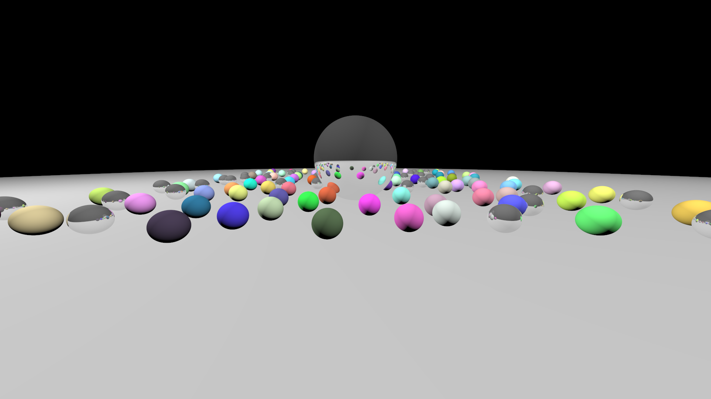
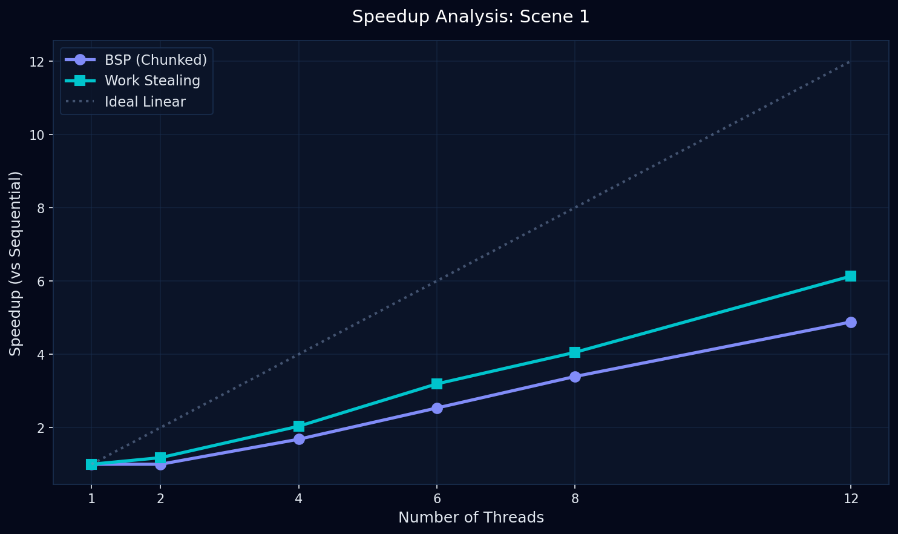

Built from scratch in Go. Engineered with a custom lock-free Chase-Lev work-stealing scheduler to dynamically balance CPU load across asymmetric rendering tasks.

Eliminates mutex contention using sync/atomic Compare-And-Swap primitives, allowing threads to operate continuously without blocking.
Implements a Chase-Lev Deque. Idle threads dynamically steal 32x32 pixel chunks from busy threads, solving the starvation problem in standard BSP models.
Calculates multi-bounce reflections, diffuse and specular lighting interactions, and uses jittered multi-sampling for smooth anti-aliasing.
Watch how rays are mathematically simulated to calculate lighting, shadows, and reflections. The engine calculates these intersections millions of times per second.
